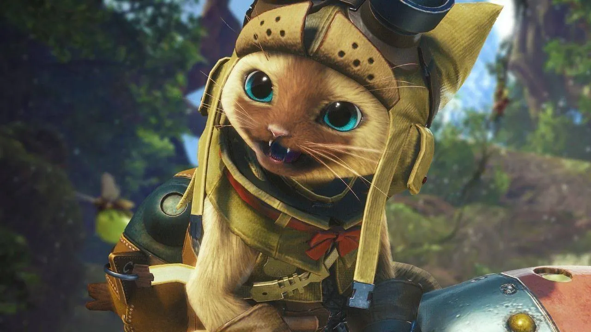
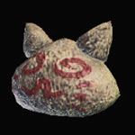
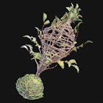
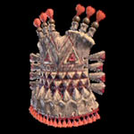
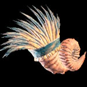
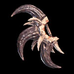
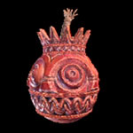

|  |
- Aerosol melífera vitae
- Jaula de noctiluca
- Escudo hormiguero
- Orquesta coral
- Cortabolsas
- Cóctel miaulutov
|  |
Descripción: Se utiliza para recuperar la vida del Cazador Obtención: Lo tendrás en tu inventario desde el principio del juego, no hace falta conseguirlo. |
|
Descripción: Se trata de una trampa especial. Lo que hace es, una vez colocada, lanzar un destello que ciega a los enemigos cercanos. Esto les deja aturdidos temporalmente y te da la opción de atacar sin miedo a represalias. Obtención: Se consigue de un Pillabichos cuando llegues a la máxima altura de la tercera "planta" del Bosque Primigenio. |
 |
|  |
Descripción: Un escudo bastante grande. Sirve para bloquear ataques de los enemigos, pero también se usa para provocar a los monstruos y hacer que te ataquen. Obtención: Tienes que ir al Yermo de Agujas y, una vez ahí, hablar con el Pillabichos que encontrarás en una cueva del extremo nordeste del desierto. Cuando hables con él se activa Intercambio cultural: Yermo de Agujas. Al completar esta misión, el Pillabichos que te encomendó la misión te dará el cachivache. |
|
Descripción: Se trata de un objeto especial, una especie de cuerno que lanza varios tipos de potenciadores temporales de ataque, defensa... Obtención: Tienes que ir a los Altiplanos Coralinos para poder comenzar con esta misión. Debes dar con los tres Grymalkynes montados sobre Shamos, derribarlos, y luego usar a los lafarillos para seguir el rastro de los gatetes hasta su guarida. Después de hablar con ellos, regresa a Astera. En el tablón de anuncios deberías ver la misión Trovadores en apuros. Completa la misión y conseguirás el cachivache. |
 |
|  |
Descripción: Un cachivache que, en esencia, roba objetos a los enemigos y, cuanta mayor destreza tengas, más calidad tendrán los objetos. Obtención: Se consigue en el Valle Putrefacto, pero antes tienes que cumplir un requisito muy concreto. Cuando vayas a iniciar la Expedición, fíjate en la parte inferior derecha de la pantalla, donde aparece la sección "Investigadores de campo". Tiene que haber un "Experto lynian". Si no lo hay, ve a otras zonas y repite el viaje hasta que aparezca. Lo que debes hacer ahora es ir a la zona 13 del Valle y hablar con el Experto. Quédate en la zona, espera a que aparezca el Odagaron pero no te muevas del lado del Experto, deja que el Odagaron haga sus cosas sin atacarle. Cuando veas aparecer a los Saqueadores, persíguelos hasta que se "escapen", coloca carne cruda en el suelo y, cuando se acerquen al pedazo, habla con ellos. |
|
Descripción: Permite a tu camarada poder tirar bombas a los monstruos con su propia herramienta. Obtención: Primero obtén los cuatro cachivaches anteriores, luego llega al Torrente Eterno, completa las submisiones Intercambio cultural: lengua Gajalaka e Intercambio cultural: Lengua Gajalaka II. |
 |